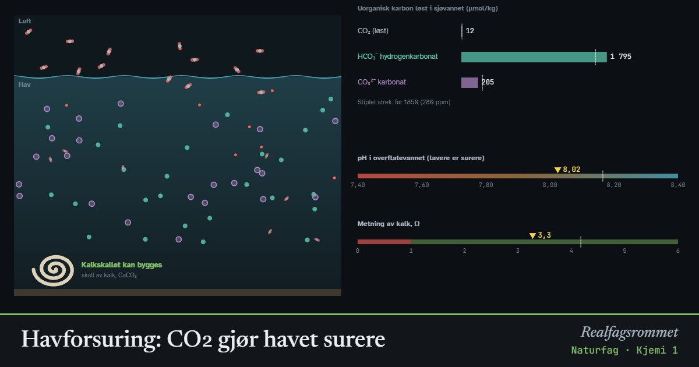

Havforsuring: CO₂ gjør havet surere
Havet tar opp omtrent en firedel av CO₂-utslippene våre. CO₂ reagerer med vann og danner karbonsyre, og havet blir surere. Samtidig blir det mindre karbonat igjen, og det blir vanskeligere for skjell, koraller og plankton å bygge kalkskall.
Start animasjonen
Formler
Om animasjonen
CO₂, karbonsyre (H₂CO₃), hydrogenkarbonat (HCO₃⁻), karbonat (CO₃²⁻) og kalk (CaCO₃) er uorganiske karbonforbindelser. De inneholder karbon, men ikke kjeder av karbon og hydrogen slik organiske stoffer gjør.
Når CO₂ løses i vann, dannes litt karbonsyre. Den gir fra seg H⁺, så pH synker. Mesteparten av karbonet som er løst i havet, finnes som hydrogenkarbonat.
Mye av den ekstra H⁺ reagerer med karbonat og blir til hydrogenkarbonat. Derfor blir det mindre karbonat når CO₂ øker, selv om det blir mer karbon i havet totalt. Karbonatet virker som en buffer som demper pH-fallet.
Skjell og koraller er bygd av kalk. Metningen Ω forteller om vannet har nok karbonat. Er Ω større enn 1, kan kalk dannes. Er Ω mindre enn 1, løses kalken opp. Kaldt vann løser mer CO₂ og har mindre karbonat fra før, så polarhavene blir undermettet først. Modellen gjelder overflatevann i likevekt med lufta.
Prøv dette
- Hvor mye har pH sunket fra 1850 (280 ppm) til i dag (420 ppm)? Hvor mange prosent mer H⁺ er det i havet?
- Hvilken karbonforbindelse finnes det mest av i sjøvann? Hvilken blir det mindre av når CO₂ øker?
- Velg polarhav. Hvor høyt må CO₂-nivået bli før vannet blir undermettet på kalk (Ω < 1)?
- Hvorfor er havforsuring et problem for blåskjell, koraller og vingesnegler? Hva kan det bety for næringskjedene i havet?
Kompetansemål
- Naturfag: Karbonforbindelser og karbonets betydning for livet
- Naturfag: Klimaendringer, utbredelse av arter og biologisk mangfold
- Naturfag: Syrer og baser (også i yrkesfagene)
- Kjemi 1: Syrer, baser, protolyse og pH
Mer om syrer, baser og pH
Mer om klima, miljø og bærekraft
- Drivhuseffekten og jordas strålingsbalanse
- Karbonkretsløpet og CO₂ i atmosfæren
- Klimaendringer og artenes utbredelse
- Miljøgifter hoper seg opp i næringskjeden
- Rovdyr og byttedyr
- Energistrøm og næringskjeder
- Grønn kjemi: atomøkonomi
- Årstider, dagslengde og solinnstråling
- Regnskygge og føhn: hvorfor Bergen er våtere enn Oslo
- Flom: regn, jord og asfalt